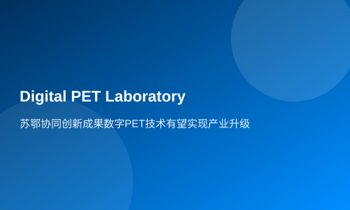

Collaborative innovation results in Suzhou and Hubei Digital PET technology is expected to achieve industrial upgrading
Xinhua News Agency Hubei Channel reported on February 27 (by Xiong Shaochong) that at the award ceremony for the 2013 Annual Hubei Provincial Science and Technology Awards held on February 25, a project named 'Key Technologies of Small Digital PET Imaging' stood out and won the first prize in Technical Invention.
Recently, digital PET (Positron Emission Tomography) technology has just received support from the National Major Scientific Instrumentation Equipment Development Special Project. The total funding for this project is 818 million yuan, with a national special fund of 592 million yuan. Now comes another piece of good news. Some experts believe that digital PET technology holds promise to achieve an upgrade and leapfrog development in China's high-end medical imaging equipment industry.
Collaborative efforts from both places
The 'Key Technologies of Small Digital PET Imaging' project was jointly developed by Suzhou Rayence Technology Co., Ltd. and the Digital PET Laboratory at Huazhong University of Science and Technology. It is based on the MVT (Multi-Voltage Threshold) method, which was independently invented by the PET laboratory. After years of research involving dozens of researchers, it has successively completed technological innovations in electronics, detectors, and systems, solving for the first time a world-class challenge: digitizing PET pulse signals from their source.
The project leader, Professor Xie Qingguo from the National Laboratory of Optoelectronics (Pilot) and Huazhong University of Science and Technology's School of Life Sciences, believes that industrialization has had a significant driving effect on technological research. Due to enterprises' better understanding of market demand, they can guide instrument research towards practical directions, such as developing adaptive functions or variable structure PETs, making the developed instruments immediately effective in application fields. Additionally, enterprises have stricter engineering standards, accelerating the productization of research results and ensuring that laboratory prototypes also possess stable performance like mature products.
With the intention to quickly convert new technology into products to benefit society, Xie Qingguo decided not to remain at the level of patents and articles as evaluation criteria but instead to address actual and urgent social needs, making industrialization a higher-level goal.
Suzhou Rayence Technology Co., Ltd. has become the greatest support for the laboratory in achieving this goal. From innovation methods to innovative technologies and then to the industrialization of innovative instruments, due to market demand guidance and enterprise standards promotion, the digital PET research team has explored the fastest direct channel.
In 2010, the world's first fully digital PET prototype - Trans-PET was jointly developed by the laboratory and Rayence. On this basis, Rayence further leveraged its advantages in product development to create a series of products called Trans-PET® BioCaliburn®, which were successively developed and put into use according to different market demands, rapidly demonstrating value in fields such as biomedical basic research and drug development.
Where does digital PET excel
Currently, there are five PET centers in Wuhan. Academician Fan Mingwu of the Chinese Academy of Engineering, who laid the foundation for PET applications in Central China, said: 'Actively promoting the application of PET was due to its immeasurable value to society because it has irreplaceable advantages in diagnosing and treating major diseases.'
As an active practitioner of PET application promotion, Professor Zhu Xiaohua from the Department of Nuclear Medicine and PET Center at Tongji Hospital Affiliated with Huazhong University of Science and Technology believes that digital PET not only can achieve early diagnosis and treatment of cancer but also provide personalized precision treatments.
This is because digital PET not only has higher resolution and sensitivity compared to other medical imaging devices, but it also possesses adaptive correction systems, making it more accurate in clinical use over time. Another advantage of digital PET is its modular design, which will continuously reduce costs as it keeps up with the updates in consumer electronics.
Zhu Xiaohua believes that Wuhan has already formed a high ground for digital PET applications. She very much hopes that under national support, Wuhan can establish a Digital PET Application Demonstration Center in Central China to better promote its application and quickly bring benefits to patients.
The idea of 'research-industry-academia-use' is inspiring
It is understood that the Hubei Provincial Science and Technology Awards are organized by the Hubei Provincial Department of Science and Technology, established to encourage independent innovation, promote the transformation and application of achievements, and 'research-industry-academia-use' cooperation. It includes categories such as Natural Science Award, Technical Invention Award, Scientific and Technological Progress Award, and Small and Medium Enterprise Innovation Award, with a very strict review process where all re-evaluations are conducted by experts from authoritative fields, representing the highest awards in Hubei's scientific community.
The Technical Invention Award mainly grants citizens or organizations that have made significant technological inventions using scientific and technological knowledge. The achievements participating in the evaluation should be authorized with an invention patent and registered as a provincial scientific and technological achievement, having been comprehensively applied to production practice for more than three years.
This year's Technical Invention Award received 46 projects from various units such as the Hubei Provincial Department of Science and Technology, municipal science and technology bureaus, and well-known universities. Ultimately, it awarded 14 third prizes, 8 second prizes, and 9 first prizes. Among them, 'Digital PET Imaging Key Technologies' is the only research achievement in nuclear medicine imaging to receive this award.
Being able to stand out among many competitors from a major province for science and education is a great encouragement for the Digital PET Laboratory and Rayence's combined development approach of 'research-industry-academia-use'. Xie Qingguo introduced that they will more actively leverage their technological advantages, utilizing support from national major instrument projects and other funds to accelerate clinical PET research, gather more forces to promote the entire PET industry chain development, and make digital PET serve the public as soon as possible.
It is reported that relying on the research results of the Digital PET Laboratory, Huazhong University of Science and Technology is actively preparing to establish a medical imaging instrument company specifically around clinical PET with support from Wuhan Municipal Government. It is expected to be officially registered within months. This is an important part of the digital PET industry chain layout, becoming an important partner for Suzhou Rayence Technology Co., Ltd. Synergistic innovation between Jiangsu and Hubei may begin industrialization upgrades.